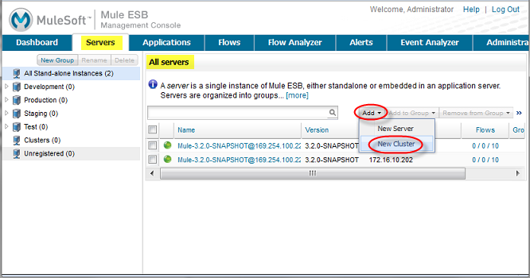
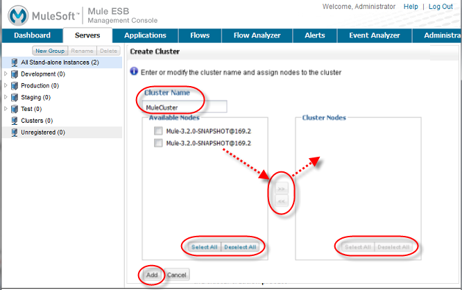
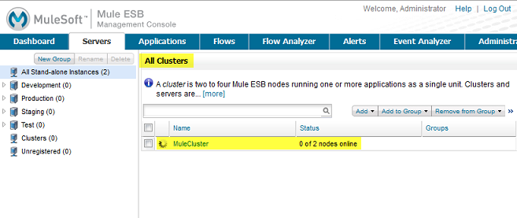

Creating or "Disbanding" (Deleting) a Cluster
You can use the management console to create one or more clusters. Any cluster you create must include at least two nodes. Currently, the cluster can be configured to include a maximum of four nodes. You can also "disband" (that is, delete) the cluster.
| When you create a cluster, all the nodes that you select for the cluster must implement the same Mule ESB version. If you need to upgrade a server so that it matches the Mule ESB version of the other cluster nodes, first unregister the server, then upgrade it to the required version of Mule. Then you can create the cluster with the upgraded server (and the other servers) as nodes. |
You can also create and disband clusters programmatically using REST APIs.
Creating a Cluster
You create a cluster by performing the following steps:
-
Register the two, three, or four servers that you want to place in a cluster, if these servers are not already registered with the console.
-
Bring up the All servers pane. Click the Servers tab, and if necessary, click "All" in the navigation pane. Clicking "All" displays the servers registered in all groups. You may need to click "All" if you’re currently viewing the servers registered in a specific group such as Development or Test.
-
From the All servers pane, click the Add pull-down menu (upper-right toolbar) and select New Cluster from the menu options.
 -
In the Create Cluster pane that appears, enter a name for the cluster in the Cluster Name box. Then, select and add two or more available nodes to the cluster. Use the right arrow to add selected nodes from the Available Nodes list to the Cluster Nodes list. (Use the left arrow to remove nodes from the cluster.) Use the Select All/Deselect All buttons in the Available Nodes and Cluster Nodes lists to select or unselect all items in the respective lists. When finished, click the Add button in the lower left corner to complete the operation, or click Cancel to cancel the cluster creation.
 -
The console then displays the All servers pane. During the cluster creation process the pane marks the new cluster with an "in-progress" icon.
Although not explicitly visible to the user, the management console sends tickets to all the cluster nodes and restarts them. The in-progress indicator indicates that the console is waiting for the nodes to restart. Once the cluster nodes restart, the cluster is ready for use.
Notice that the All servers pane does not list the individual nodes in a cluster. Instead, it lists the cluster as a single unit. In the example above, MuleCluster contains multiple nodes (MuleServer1 and MuleServer 2, which are not shown). MuleServer 3 and MuleServer 4 are individual, stand-alone servers.
In fact, you can’t manage the individual nodes in a cluster. For example, if you add a cluster to a group, you won’t be able to list the individual cluster nodes that are in the group. Once you create a cluster, the management console makes it easy to manage the cluster as a unit, and makes the cluster the focal point for management operations.
| Any alerts that are defined on a server are removed when the server is added as a node to a cluster. You can however, create a Server Down or Server Up alert on the cluster node. An alert is raised when the cluster node is down or up, respectively. |
Disbanding or Deleting a Cluster
You "disband" (that is, delete) a cluster from the All servers pane. To disband a cluster, select one or more clusters in the cluster list, then click Disband Cluster(s) in the Remove pull-down menu.
Disbanding a cluster undeploys any applications that were deployed to the cluster. The nodes that comprise the cluster become standalone servers.
Creating a Cluster Manually
When you use the management console to add a node to a cluster, the console sends a ticket to the node and restarts it (it also does this for any other nodes already in the cluster).
Alternatively, you can manually add a Mule instance to a cluster by creating the same ticket file that the management console creates for the node, and then restart the node.
The ticket file is a Java properties file, which is located at MULE_HOME/.mule/mule-cluster.properties. The file has the following format:
mule.clusterSize=CLUSTER_SIZE
mule.clusterSchema=partitioned-sync2backup
mule.clusterId=CLUSTER_ID
mule.clusterNodeId=CLUSTER_NODE_IDwhere:
-
CLUSTER_SIZE: The number of nodes in the cluster – an integer between 2 and 4. -
partitioned-sync2backup: The schema identification of the cluster (mule.clusterSchema). It must literally be specified aspartitioned-sync2backup. -
CLUSTER_ID: The ID of the cluster. It can be any alphanumeric string, and must be the same for all nodes in the cluster. If you have more than one cluster, each must have a uniqueCLUSTER_ID. -
CLUSTER_NODE_ID: The ID of the node within the cluster. It can be any integer between 1 and the number of nodes in the cluster. TheCLUSTER_NODE_IDfor each node must be unique within the cluster. This means that if you have four nodes in a cluster, there must be a node with a
CLUSTER_NODE_IDof 1, and other nodes with `CLUSTER_NODE_ID’s of 2, 3, and 4, respectively.
|
Mixed Management is Not Supported If you create a cluster manually, you must manage it manually. You cannot manage it using the management console. |